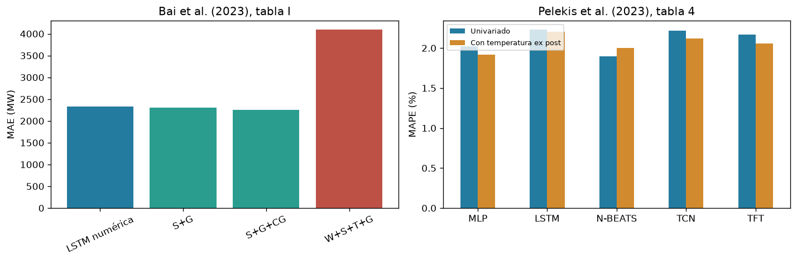
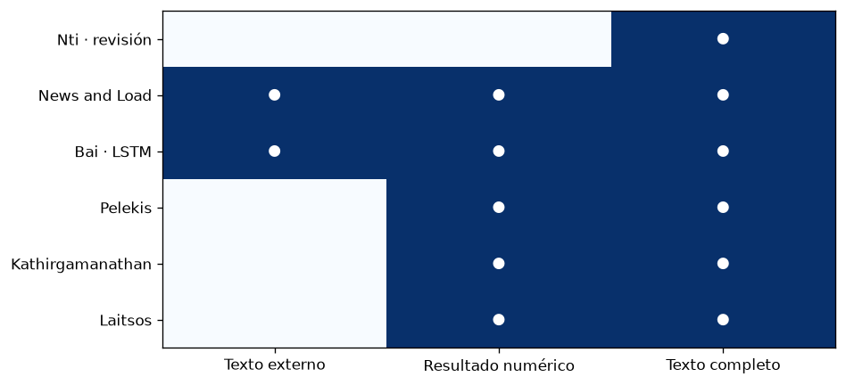
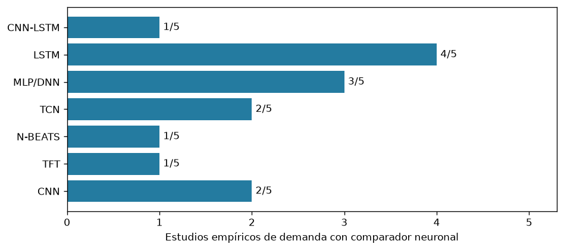
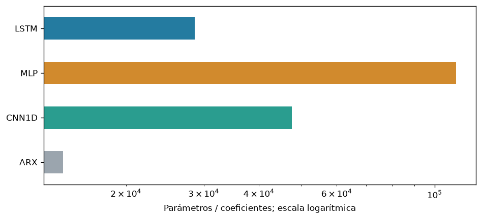

8. Literatura y fundamento del diseño#
La revisión examina el pronóstico de demanda eléctrica mediante redes numéricas, representaciones multiescala e integración documental. La evidencia empírica de demanda sustenta la selección de comparadores; los métodos generales orientan las alternativas de representación. Los resultados se presentan con las métricas y condiciones de cada publicación, distinguiendo afiliación de los autores y territorio de los datos.
8.1. Fuentes, selección y alcance#
Se realizó una revisión dirigida de estudios de demanda eléctrica y métodos de pronóstico temporal y documental. Se consultaron exportaciones de Scopus, Web of Science e IEEE Xplore, complementadas con búsquedas públicas y recuperación de textos completos. La extracción distingue evidencia empírica de demanda, contribuciones metodológicas y resultados disponibles únicamente en resúmenes.
Se priorizaron estudios con datos, horizonte, arquitectura y evaluación identificables. Los duplicados, avisos de retirada y aplicaciones sin relación metodológica con el problema se excluyeron de la síntesis empírica.
Criterios de elegibilidad y búsqueda#
La búsqueda dirigida abarcó publicaciones de 2018 al 8 de noviembre de 2026. El recuento de comparadores requiere texto completo y evaluación explícita de la familia: se excluyen modelos propuestos, componentes, ablaciones y menciones. Las revisiones aportan contexto y los resúmenes permiten identificar candidatos.
La ampliación pública del 8 de noviembre de 2026 utilizó (load forecasting OR electricity demand forecasting) AND (CNN OR convolutional OR LSTM OR MLP) AND (comparison OR benchmark). El registro de búsqueda documenta las consultas y fuentes recuperadas.
import numpy as np
import pandas as pd
import matplotlib
matplotlib.use('Agg')
import matplotlib.pyplot as plt
from IPython.display import display
plt.rcParams.update({'figure.dpi':120,'font.size':10})
8.2. Estudios directamente relacionados con la demanda#
Estudio y fuente |
Afiliación / datos |
Modelo y diseño |
Resultado e implicación |
|---|---|---|---|
Ghana / múltiples países |
Revisión de métodos, factores y escalas del pronóstico de carga. |
Sustenta estudiar calendario, condiciones ambientales e historia de demanda; la heterogeneidad impide atribuir una arquitectura ganadora universal. |
|
Francia / Gran Bretaña e Irlanda del Norte |
ExtraTrees con demanda, clima y calendario; incorporación de distintas representaciones de noticias. |
Una representación por frecuencia de palabras reduce el MAE de 2374,07 a 2283,52 MW en su comparación. El resultado depende de representación y disponibilidad documental. |
|
Francia / Reino Unido |
LSTM de 24 unidades y salida de 48 intervalos de media hora; compresión convolucional de embeddings de noticias. |
Las variantes de texto presentan ganancias y deterioros frente a la LSTM numérica. El canal documental requiere selección y ablación controladas. |
|
Grecia / Portugal, 2013–2021 |
MLP, LSTM, N-BEATS, TCN y TFT; 100 ensayos y ensamble mediano de 30 redes. Entrenamiento 2013–2019, validación 2020, prueba 2021. |
N-BEATS alcanza MAPE 1,90 % en el caso univariado; con temperatura, MLP obtiene 1,92 %. La covariable no mejora a todas las familias. La temperatura evaluada ex post no demuestra disponibilidad operativa. |
casos=pd.DataFrame({'variante':['LSTM numérica','S+G','S+G+CG','W+S+T+G'],'MAE_MW':[2333.20,2299.20,2248.55,4094.80]})
resultados=pd.DataFrame({'modelo':['MLP','LSTM','N-BEATS','TCN','TFT'],'Univariado':[2.02,2.23,1.90,2.22,2.17],'Con temperatura ex post':[1.92,2.20,2.00,2.12,2.06]})
fig,axes=plt.subplots(1,2,figsize=(12,4))
axes[0].bar(casos.variante,casos.MAE_MW,color=['#247ba0','#2a9d8f','#2a9d8f','#be5146']);axes[0].tick_params(axis='x',rotation=25)
axes[0].set(ylabel='MAE (MW)',title='Bai et al. (2023), tabla I')
resultados.set_index('modelo').plot.bar(ax=axes[1],color=['#247ba0','#d18a2d'],rot=0)
axes[1].set(ylabel='MAPE (%)',xlabel='',title='Pelekis et al. (2023), tabla 4');axes[1].legend(fontsize=8)
fig.tight_layout();display(fig);plt.close(fig)
ganancia_bai=100*(1-casos.MAE_MW.iloc[2]/casos.MAE_MW.iloc[0])
deterioro_bai=100*(casos.MAE_MW.iloc[3]/casos.MAE_MW.iloc[0]-1)

En Bai et al., la mejor combinación de titulares S, descripciones G y descripciones corporativas CG reduce el MAE un 3.63 %, mientras que combinar palabras clave W, titulares S, textos T y descripciones G lo incrementa un 75.5 %. En Pelekis et al., añadir temperatura favorece a cuatro familias y perjudica a N-BEATS. Ambas comparaciones muestran que más información no garantiza menor error; las alturas de los dos paneles no son comparables porque corresponden a métricas y conjuntos diferentes.
Comparadores adicionales de demanda revisados en texto completo#
Estudio |
Afiliación / datos |
Comparadores y resultados |
Alcance crítico |
|---|---|---|---|
Canadá / Nueva Inglaterra, EE. UU. |
ANN de dos capas, CNN1D y LSTM independientes; MAPE medio 4,137 %, 3,911 % y 3,894 %, respectivamente, tabla 7. |
Ajuste 2004–2007, prueba 2009. Tabla 4 identifica CNN1D; la descripción de convoluciones no coincide completamente con esa tabla. El recorte de épocas de §8.3 limita comparación con la configuración completa. |
|
Grecia y EE. UU. / Thira, Grecia |
MLP, LSTM, CNN1D, CNN-LSTM y TCN frente a ConvLSTM encoder–decoder. MAE 0,4477; 0,4275; 0,4936; 0,4412; 0,4576 y 0,4142 MW, tabla 4. |
Datos horarios 2017–2019; últimos tres meses para prueba. Veinte iteraciones de optimización por modelo. No se acredita repetición multisemilla; el ajuste exclusivo del Min–Max en entrenamiento requiere verificación. |
Ambos estudios documentan CNN1D como comparador de demanda. Sus configuraciones y escalas difieren del SIN; respaldan la familia, sin transferir cifras ni demostrar que sea universalmente superior.
8.3. Métodos complementarios#
Las contribuciones multiescala, de mezcla temporal y de representación documental ofrecen mecanismos de interés para la demanda. Los resultados obtenidos en otros dominios se utilizan como fundamento metodológico y no se incorporan al recuento empírico de comparadores.
Métodos generales#
Estudio y evidencia |
Afiliación / caso |
Arquitectura o contribución |
Resultado |
|---|---|---|---|
Li et al. (2025) · MTS-Mixers · Resumen |
China / Benchmark multivariado; geografía no detallada en resumen |
Mezcla temporal y de canales factorizada |
Resultados competitivos y mayor eficiencia; sin cifras en el resumen. |
Zhai et al. (2025) · CSConv · Resumen |
No verificado / Ocho datasets; países no especificados en resumen |
Filtrado espectral cruzado + convolución causal dilatada + MLP |
Resultados competitivos; sin cifras en el resumen. |
Kawano y Kawahara (2024) · DDformer · Resumen |
Japón / Energía, finanzas y clima; países no detallados en resumen |
Transformer con descomposición y expansión/reducción dimensional |
Hasta 45,9 % menos error frente a FEDformer, según resumen. |
Qu et al. (2024) · Forwardformer · Resumen |
China / China y EE. UU. · demanda day-ahead |
Atención multiescala; encoder y doble decoder |
Mejor precisión y menor tiempo declarados; sin cifras en resumen. |
Sharda et al. (2021) · RSAM · Resumen |
India / Dos sitios NREL; país no explicitado en resumen |
Transformer multihorizonte + regresión cuantílica |
Supera RNN en RMSE/MAE/MBE/skill; sin valores en resumen. |
Liu et al., Time-MMD aporta un diseño de integración entre series y documentos. Tan et al. examina el papel del modelo de lenguaje mediante ablaciones. Nguyen et al., REST-TS estudia una corrección documental de residuos. Estas referencias orientan los controles del componente textual; sus resultados no se trasladan directamente al pronóstico de demanda del SIN.
Documentos operativos#
Estudio y evidencia |
Afiliación / caso |
Arquitectura o contribución |
Resultado |
|---|---|---|---|
Egharevba et al. (2025) · Resumen |
Canadá / Canadá · pérdidas en Alberta; IEEE-118 sintético |
Predicción inicial + refinamiento por clusters; informes de desconexiones |
Mejora frente a benchmarks; el resumen no da cifras. |
Egharevba et al. (2024) · Resumen |
Canadá / Canadá · pérdidas de transmisión en Alberta |
Sentimiento con LLM sobre comentarios del operador + predictor |
Mejora de precisión declarada de 2–3 %, según modelo/experimento. |
Estudios de contexto identificados en IEEE#
Registro y estudio |
Arquitectura o enfoque |
Resultado declarado en resumen |
|---|---|---|
IEEE002 · Compute KV First: Scaling up Time Series Model with Cross-Retention-only Transformer |
CKVF: Transformer de cross-retention con adyacencia adaptativa |
Complejidad lineal y buen desempeño declarados; sin datos numéricos en el resumen. |
LHCnn: convoluciones de nivel bajo/alto con atención |
Mejoras de precisión y entrenamiento multi-GPU declaradas, sin cifras. |
|
IEEE023 · Beyond Words: Adapting NLP Methodologies for Time Series Forecasting Challenges |
Autoformer, DLinear, WaveNet, DeepAR y SimpleFeedForward |
El resumen comunica MASE 1,163 para WaveNet. |
IEEE029 · MTSMAE: Masked Autoencoders for Multivariate Time-Series Forecasting |
MTSMAE: Transformer con preentrenamiento por enmascaramiento y patches |
Mejoras declaradas en varios conjuntos, sin valores. |
IEEE037 · TS-PTLM: Enhancing General Time Series Analysis with Pre-Trained Language Models |
TS-PTLM: transferencia entre modalidades y adaptadores temporales/frecuenciales |
Tres tareas de series temporales; sin valores en el resumen. |
LSTM seq2seq y GRU seq2seq |
Diferencias medias MAE declaradas: 0,03013 para GRU y 0,00941 para LSTM frente a versiones adaptadas. |
|
BiLSTM frente a LSTM |
Autores reportan accuracy 96,55 % y 94,36 %. |
|
LDA, K-prototypes y K-means con reducción de dimensión |
Noticias y clima de Rumania 2009–2023; análisis exploratorio. |
Estos ocho resúmenes amplían las alternativas de representación, eficiencia y análisis ambiental. No se incluyen en el recuento de comparadores revisados en texto completo. Accuracy para lluvia y errores de temperatura no son métricas transferibles al pronóstico de demanda.
8.4. Matriz de evidencia de demanda#
La matriz distingue el uso de texto externo, la presencia de resultados numéricos y la revisión de texto completo en los seis estudios de demanda. Una revisión bibliográfica y un estudio empírico no aportan el mismo tipo de evidencia.
matriz=pd.DataFrame(
[[0,0,1],[1,1,1],[1,1,1],[0,1,1],[0,1,1],[0,1,1]],
index=['Nti · revisión','News and Load','Bai · LSTM','Pelekis','Kathirgamanathan','Laitsos'],
columns=['Texto externo','Resultado numérico','Texto completo'])
fig,ax=plt.subplots(figsize=(8,3.7))
ax.imshow(matriz.values,aspect='auto',cmap='Blues',vmin=0,vmax=1)
ax.set(xticks=range(3),xticklabels=matriz.columns,yticks=range(len(matriz)),yticklabels=matriz.index)
for i in range(len(matriz)):
for j in range(3):
if matriz.iloc[i,j]:ax.text(j,i,'●',ha='center',va='center',color='white')
fig.tight_layout();display(fig);plt.close(fig)

La síntesis reúne cinco estudios empíricos de demanda y una revisión. Dos estudios empíricos integran información textual. Esta evidencia permite examinar mecanismos de integración, pero su presencia no demuestra una mejora generalizable entre sistemas eléctricos.
8.5. Frecuencia de uso como comparador#
La unidad de conteo es el par estudio–familia: varias configuraciones de una familia cuentan una vez. Se incluyen comparadores evaluados y comparadores de benchmarks, excluyendo modelos propuestos, componentes, ablaciones y menciones. MLP y DNN se agrupan; los híbridos conservan su nombre y no se descomponen en familias. Una CNN sin dimensión documentada no se etiqueta automáticamente como CNN1D.
Evidencia directa de demanda#
El denominador contiene cinco estudios empíricos revisados en texto completo: News and Load, Bai con LSTM y Pelekis et al., Kathirgamanathan et al. y Laitsos et al. Nti et al. se excluye por ser revisión; Forwardformer permanece fuera hasta disponer de extracción de texto completo. ExtraTrees no suma una familia neuronal. La convolución utilizada para comprimir noticias tampoco se cuenta como CNN predictora independiente.
demanda=pd.DataFrame([('News and Load','ExtraTrees'),('Bai LSTM','LSTM'),('Pelekis','MLP/DNN'),('Pelekis','LSTM'),('Pelekis','N-BEATS'),('Pelekis','TCN'),('Pelekis','TFT')],columns=['estudio','familia'])
demanda=pd.concat([demanda,pd.DataFrame([('Kathirgamanathan','MLP/DNN'),('Kathirgamanathan','LSTM'),('Kathirgamanathan','CNN'),('Laitsos','MLP/DNN'),('Laitsos','LSTM'),('Laitsos','CNN'),('Laitsos','TCN'),('Laitsos','CNN-LSTM')],columns=demanda.columns)],ignore_index=True)
familias=['CNN-LSTM','LSTM','MLP/DNN','TCN','N-BEATS','TFT','CNN']
freq_demanda=demanda.drop_duplicates().groupby('familia').estudio.nunique().reindex(familias,fill_value=0)
fig,ax=plt.subplots(figsize=(8,3.6));ax.barh(familias,freq_demanda,color='#247ba0');ax.invert_yaxis()
for i,v in enumerate(freq_demanda):ax.text(v+.04,i,f'{v}/5',va='center')
ax.set(xlim=(0,5.3),xticks=range(6),xlabel='Estudios empíricos de demanda con comparador neuronal')
fig.tight_layout();display(fig);plt.close(fig)

LSTM aparece en cuatro de cinco estudios empíricos; MLP en tres; CNN1D y TCN, en dos cada una. CNN-LSTM, N-BEATS y TFT aparecen una vez. CNN1D queda empatada en la tercera frecuencia del corpus dirigido. Este recuento justifica su uso como comparador documentado de demanda, sin estimar prevalencia universal. Los dos artículos de Bai comparten línea de investigación y sistema eléctrico; cuentan como publicaciones, sin constituir replicaciones independientes entre países. Los ensambles y las ramas de compresión textual no se descomponen como baselines individuales.
8.6. Arquitecturas de interés y modelos numéricos#
MLP, LSTM y CNN1D contrastan representación densa, estado recurrente y filtros temporales; ARX aporta un control lineal regularizado. Pelekis et al. sustenta conservar una referencia densa frente a métodos más complejos. La frecuencia de comparadores complementa esta justificación sin constituir una regla universal de selección.
Las configuraciones seleccionadas utilizan historia de 168 horas, salida de 24 y 23 variables de calendario. MLP contiene dos capas de 128 unidades; LSTM una capa de 48; CNN1D una convolución de 16 filtros y kernel cinco, seguida de promedio local de factor dos y una cabeza lineal. LSTM y CNN1D concatenan calendario futuro a la representación temporal y predicen residuos alrededor del nivel. ARX utiliza 48 rezagos.
Con f=24, L=168, H=24, K=23 y d=L+HK, MLP tiene P=(d+1)u+(u+1)u+(u+1)H; LSTM, P=4u(f+u+2)+(u+HK+1)H; CNN1D, P=(kf+1)c+(Lc/2+HK+1)H. Los costos dominantes por ejemplo son O(du+u²+uH), O(Lu(f+u)+(u+HK)H) y O(Lkfc+(Lc/2+HK)H), respectivamente.
L,H,K,f=168,24,23,24;d=L+H*K;u=128
parametros=pd.Series({'ARX':(48+H*K+1)*H,'CNN1D':(5*f+1)*16+((L//2)*16+H*K+1)*H,'MLP':(d+1)*u+(u+1)*u+(u+1)*H,'LSTM':4*48*(f+48+2)+(48+H*K+1)*H})
assert parametros.to_dict()=={'ARX':14424,'CNN1D':47464,'MLP':111896,'LSTM':28632}
fig,ax=plt.subplots(figsize=(8,3.7));parametros.plot.barh(ax=ax,color=['#9ba5ae','#2a9d8f','#d18a2d','#247ba0']);ax.set_xscale('log');ax.set_xlabel('Parámetros / coeficientes; escala logarítmica');fig.tight_layout();display(fig);plt.close(fig)

Entre las cuatro familias de demanda/calendario, la MLP presenta la mayor capacidad parametrizada. La CNN1D conserva una salida densa sobre posiciones temporales agrupadas, por lo que su tamaño no depende sólo del número de filtros. Los parámetros no determinan por sí solos precisión ni latencia; el capítulo de modelos contrasta error, variabilidad y tiempo registrado.
8.6.1. MLP sobre ventana de rezagos#
La MLP representa interacciones no lineales entre una ventana fija y calendario mediante capas densas. Su sesgo inductivo no impone recurrencia ni invariancia a traslaciones temporales; cada posición puede aprender una función distinta. Es adecuada cuando los perfiles y el calendario explican gran parte de la variación, pero puede depender de una selección suficiente de rezagos y de regularización. Su paralelización es directa y su costo crece con longitud de entrada, ancho y profundidad.
Pelekis et al., Kathirgamanathan et al. y Laitsos et al. incluyen modelos densos como comparadores. Los datasets, DOI, resultados y dispersión disponible están en §8.2; sus configuraciones no son idénticas a las del SIN. La arquitectura seleccionada y su pérdida, optimizador, parámetros y costo se detallan en la ficha de MLP. La referencia lineal ARX contrasta si la capacidad no lineal añade precisión bajo las entradas observadas.
8.6.2. LSTM sobre secuencias#
La LSTM utiliza puertas y estado recurrente para representar dependencias de una secuencia. El último estado comprime la historia, por lo que una memoria más larga no garantiza conservar toda la información relevante. Su capacidad permite relaciones temporales flexibles, pero depende de escalado, longitud de secuencia y regularización. El procesamiento recurrente introduce una dependencia de cálculo entre pasos y puede elevar el tiempo respecto a una red densa de tamaño comparable.
Las comparaciones de demanda de §8.2 documentan LSTM numéricas y variantes con documentos. El uso de texto, los horizontes y el presupuesto difieren entre artículos. No se atribuye una mejora a la recurrencia aislada ni se equipara el error entre sistemas eléctricos. La ficha de LSTM reproduce la configuración ejecutada y evaluación integrada contrasta estabilidad por fechas e inicializaciones.
8.6.3. CNN1D sobre historia temporal#
La CNN1D comparte filtros entre posiciones y favorece patrones locales. La longitud del kernel, el agrupamiento y la cabeza de salida determinan cuánto contexto puede representar. El entrenamiento permite paralelizar posiciones; la cabeza aplanada del modelo ejecutado conserva dependencias con el tamaño de ventana y puede concentrar una parte importante de los parámetros. La arquitectura no incorpora por sí sola memoria recurrente.
Los dos textos completos incorporados identifican CNN1D como comparador de demanda; sus configuraciones y límites se registran en §8.2. La frecuencia observada empata con TCN en el corpus dirigido, sin justificar que ambas arquitecturas sean intercambiables. TCN conserva su categoría porque añade estructura temporal propia. La ficha de CNN1D contiene las fórmulas de capacidad y costo de la CNN seleccionada.
8.6.4. Comparación crítica de robustez y escalabilidad#
Aspecto |
MLP |
LSTM |
CNN1D |
|---|---|---|---|
Representación |
Ventana fija con pesos por posición. |
Estado recurrente que resume la secuencia. |
Filtros locales compartidos y cabeza temporal. |
Sensibilidad a revisar |
Rezagos, ancho y representación del calendario. |
Escalado, longitud, compresión del estado y regularización. |
Kernel, agrupamiento, campo receptivo y dimensión de la cabeza. |
Escalabilidad esperada |
Paralelización densa; capacidad crece con entrada y ancho. |
Costo dependiente de secuencia y recurrencia. |
Convoluciones paralelizables; cabeza aplanada crece con ventana. |
Evidencia de robustez |
Comparar años, semillas y entradas equivalentes. |
Separar variabilidad de inicialización y cambio de régimen. |
Examinar conservación de picos y sensibilidad a cambios locales. |
La robustez no puede ordenarse universalmente desde estudios con distintos datos, épocas y búsquedas. El corpus presenta resultados heterogéneos y reporte desigual de repeticiones; una media publicada sin dispersión limita la comparación. Los diagnósticos propios por año, hora, tipo de día, atípicos y permutación de demanda permiten contrastar mecanismos en el SIN, sin demostrar invariancia causal. Las complejidades teóricas tampoco sustituyen la latencia medida: la implementación, el dispositivo y el tamaño del lote condicionan el costo.
Alcance de la revisión#
El recuento de comparadores comprende cinco estudios empíricos de demanda revisados en texto completo; la revisión de Nti et al. y los trabajos consultados únicamente mediante resumen aportan contexto. La extracción fue realizada por un solo revisor. La falta de cadenas y fechas originales de Scopus y Web of Science, junto con la conciliación incompleta entre bases, limita la exhaustividad y reproducibilidad de la búsqueda.
Extensiones respaldadas por la revisión#
Línea |
Estudios orientadores |
Interés para demanda |
Condición de evaluación |
|---|---|---|---|
Multiescala y descomposición |
Forwardformer, DDformer, CSConv, TCN, N-BEATS |
Representar ciclos, tendencia e interacciones a distintas escalas. |
Ajustar transformaciones con historia disponible; comparar con las referencias estacionales. |
Mezcla y eficiencia |
MTS-Mixers, CKVF, LHCnn |
Reducir costo de atención y separar mezcla temporal y entre canales. |
Medir parámetros, tiempo y error con presupuesto comparable. |
Texto externo y fusión |
News and Load, Bai LSTM, documentos operativos |
Representar eventos, sentimiento, documentos o tópicos mediante fusión temprana o tardía. |
Ablación numérica/texto con mismos orígenes, semillas y presupuesto. |
Representaciones de lenguaje |
Time-MMD, REST-TS, TeR-TSF, TimesX, TS-PTLM |
Alinear contexto documental y comportamiento temporal, o supervisar residuos. |
Separar texto observado, recuperado y generado; registrar cobertura y disponibilidad. |
Control e incertidumbre |
ARX, RSAM, modelos probabilísticos |
Contrastar no linealidad y caracterizar incertidumbre del pronóstico. |
Distinguir intervalos predictivos de intervalos de incertidumbre de la métrica. |
Las fichas desarrollan las arquitecturas numéricas y documentales evaluadas, incluidas N-BEATS y TimesNet. Cada ficha distingue el mecanismo implementado de su artículo orientador y enlaza el pipeline. Estas incorporaciones no alteran el denominador de estudios empíricos utilizado para contar comparadores.
8.7. Priorización del Top 10 y paper guía#
La priorización documental valora cinco criterios con el mismo peso (20 % cada uno): citación ajustada por antigüedad (\(C\)), actualidad (\(R\)), evidencia de desempeño comparable (\(D\)), disponibilidad de implementación (\(I\)) y representatividad de familias (\(F\)). La fecha de corte es el 24 de noviembre de 2026. El universo de esta tabla son las diez arquitecturas implementadas; sus puntuaciones no utilizan los errores de validación ni de prueba del proyecto.
Para un artículo con \(c_i\) citas y antigüedad \(a_i=\max(1,\text{días desde su primera versión pública}/365{,}25)\), se calcula:
La transformación logarítmica modera la influencia de los artículos muy citados; la actualidad tiene una semivida de cinco años. La clasificación principal asigna dos arquitecturas a MLP residual (N-BEATS y N-HiTS), dos a convolución (TCN y TimesNet), tres a atención (TFT, PatchTST e iTransformer) y tres a integración multimodal (TaTS, fusión tardía y TGForecaster). Se usa un grupo principal por arquitectura; los mecanismos híbridos se detallan en sus fichas.
La evidencia \(D\) recibe 1 cuando existe evaluación de demanda nacional horaria a 24 h, 0,75 para consumo eléctrico multiserie u otros horizontes, 0,50 para energía a otra frecuencia, 0,25 para pronóstico en otros dominios y 0 si falta evaluación bibliográfica independiente. Las métricas reportadas se interpretan dentro de cada estudio. La implementación \(I\) recibe 1 si se localiza código de los autores del método de referencia con entradas de ejecución, 0,50 si solo se dispone de una adaptación implementada en este estudio y 0 si no se localiza código. Estos pesos, escalas y semivida son reglas de esta síntesis documental.
Las citas proceden de una captura de OpenAlex. La antigüedad se toma de la primera versión pública de arXiv, sin mezclar fechas de preprint y publicación editorial. Los contadores pertenecen al registro bibliográfico resuelto y pueden agregar versiones. Para TGForecaster se conserva el artículo v2, aunque el registro del índice tenga un título posterior. Un valor no disponible se indica como ND: no se sustituye por cero ni se calcula una puntuación total incompleta.
Puntuaciones por criterio#
Cada columna C, R, D, I y F expresa su contribución sobre 20 puntos; el total está expresado sobre 100.
from pathlib import Path
import numpy as np
import pandas as pd
from IPython.display import display, HTML
base = Path("_static/literature/priorizacion_top10")
if not base.exists():
base = Path("book") / base
tabla = pd.read_csv(base / "evidencia_top10.csv")
reglas = __import__("json").loads((base / "protocolo.json").read_text(encoding="utf-8"))
corte = pd.Timestamp(reglas["fecha_corte"])
tabla["edad_anos"] = (corte - pd.to_datetime(tabla["primera_publicacion"])).dt.days / 365.25
tabla["edad_anos"] = tabla["edad_anos"].clip(lower=1)
tabla["citas_por_ano"] = tabla["citas"] / tabla["edad_anos"]
tabla["C"] = np.log1p(tabla["citas_por_ano"]) / np.log1p(tabla["citas_por_ano"]).max()
tabla["R"] = 2 ** (-tabla["edad_anos"] / reglas["semivida_actualidad_anos"])
tabla["D"] = tabla["evidencia_comparable"]
tabla["I"] = tabla["implementacion"]
tamano = tabla.groupby("familia")["modelo"].transform("size")
tabla["F"] = tamano.min() / tamano
criterios = list(reglas["pesos"])
pesos = pd.Series(reglas["pesos"])
tabla["cobertura_criterios"] = tabla[criterios].notna().mean(axis=1)
tabla["puntuacion"] = 100 * tabla[criterios].mul(pesos).sum(axis=1, min_count=len(criterios))
tabla["prioridad"] = tabla["puntuacion"].rank(method="min", ascending=False).astype("Int64")
tabla = tabla.sort_values(["puntuacion", "modelo"], ascending=[False, True], na_position="last")
vista = tabla[["prioridad", "modelo", "citas_por_ano"]].copy()
for criterio in criterios:
vista[criterio] = 100 * pesos[criterio] * tabla[criterio]
vista["Total / 100"] = tabla["puntuacion"]
vista = vista.rename(columns={"prioridad": "Prioridad", "modelo": "Arquitectura", "citas_por_ano": "Citas/año"})
vista["Prioridad"] = vista["Prioridad"].astype(object).where(vista["Prioridad"].notna(), "ND")
display(HTML(vista.to_html(index=False, na_rep="ND", float_format=lambda v: f"{v:.2f}")))
| Prioridad | Arquitectura | Citas/año | C | R | D | I | F | Total / 100 |
|---|---|---|---|---|---|---|---|---|
| 1 | TCN | 1228.35 | 19.32 | 5.97 | 20.00 | 20.00 | 20.00 | 85.29 |
| 2 | TimesNet | 925.57 | 18.55 | 11.27 | 15.00 | 20.00 | 20.00 | 84.82 |
| 3 | N-BEATS | 311.02 | 15.60 | 7.07 | 20.00 | 20.00 | 20.00 | 82.66 |
| 4 | N-HiTS | 243.78 | 14.94 | 10.26 | 15.00 | 20.00 | 20.00 | 80.20 |
| 5 | iTransformer | 1034.93 | 18.85 | 12.97 | 15.00 | 20.00 | 13.33 | 80.16 |
| 6 | PatchTST | 1578.49 | 20.00 | 11.50 | 15.00 | 20.00 | 13.33 | 79.83 |
| 7 | TFT | 755.46 | 18.00 | 7.65 | 20.00 | 20.00 | 13.33 | 78.98 |
| 8 | TGForecaster · N+O | 15.95 | 7.69 | 14.13 | 15.00 | 20.00 | 13.33 | 70.15 |
| 9 | Fusión tardía · N+O | 96.72 | 12.44 | 14.24 | 10.00 | 20.00 | 13.33 | 70.02 |
| 10 | TaTS · N+O | 24.20 | 8.76 | 15.63 | 10.00 | 20.00 | 13.33 | 67.73 |
TCN presenta la mayor puntuación documental (85.29/100) entre las arquitecturas con los cinco criterios disponibles. La posición combina impacto bibliográfico, actualidad, pertinencia empírica, acceso al código y diversidad. El orden de precisión predictiva se establece por separado en la evaluación temporal.
La fusión tardía se fundamenta en MM-TSFlib, de Liu et al.. Obtiene 70.02/100 y ocupa la posición 9. La citación corresponde a esa referencia metodológica; la combinación específica con PatchTST se desarrolla en su ficha.
Descargar puntuaciones y datos de entrada · Reglas y paper guía · Captura bibliométrica.
Fundamento bibliográfico y aportación de cada arquitectura#
Arquitectura / familia |
Paper de referencia |
Evidencia de desempeño y alcance |
Implementación y aportación |
|---|---|---|---|
N-HiTS · MLP residual |
Challu et al.: NHITS: Neural Hierarchical Interpolation for Time Series Forecasting · arXiv:2201.12886v6 |
Electricity: pronóstico multiserie de consumo, horizontes 96–720; tablas de evaluación de largo horizonte. El artículo compara MSE y MAE y estudia interpolación multirresolución. |
Código. Descomposición residual e interpolación jerárquica a distintas escalas. |
TFT · Atención |
Lim et al.: Temporal Fusion Transformers for interpretable multi-horizon time series forecasting · arXiv:1912.09363v3 |
Pelekis et al., tabla 2: demanda nacional portuguesa, resolución horaria y horizonte de 24 h; ensamble con MAPE 2,17 %. El artículo de TFT estudia pronósticos multihorizonte con covariables. Paper guía. |
Código. Selección de variables, procesamiento recurrente y atención temporal interpretable. |
TCN · Convolucional |
Bai, Kolter y Koltun: An Empirical Evaluation of Generic Convolutional and Recurrent Networks for Sequence Modeling · arXiv:1803.01271v2 |
Pelekis et al., tabla 2: demanda nacional portuguesa a 24 h; ensamble con MAPE 2,22 %. Bai et al. fundamentan la convolución causal dilatada y la evalúan frente a redes recurrentes. Paper guía. |
Código. Convoluciones causales dilatadas para dependencias temporales. |
iTransformer · Atención |
Liu et al.: iTransformer: Inverted Transformers Are Effective for Time Series Forecasting · arXiv:2310.06625v4 |
Tabla 1 y apéndice de datos: ECL, consumo eléctrico horario multiserie; horizontes 96, 192, 336 y 720, evaluados con MSE y MAE. No es demanda nacional a 24 h. |
Código. Atención entre variables mediante tokens de series completas. |
PatchTST · Atención |
Nie et al.: A Time Series is Worth 64 Words: Long-term Forecasting with Transformers · arXiv:2211.14730v2 |
Tabla 3: Electricity y otros conjuntos de pronóstico largo, con MSE y MAE; horizontes 96–720. Las comparaciones y ablaciones examinan parches e independencia de canales. |
Código. Parches temporales y parámetros compartidos entre canales. |
TaTS · N+O · Multimodal |
Li et al.: Language in the Flow of Time: Time-Series-Paired Texts Weaved into a Unified Temporal Narrative · arXiv:2502.08942v3 |
Tablas 15 y 20: Time-MMD, incluido Energy semanal; comparación de MAE/MSE con y sin texto sobre varios núcleos. Energy no representa demanda eléctrica horaria. |
Código. Texto como variables auxiliares que preservan su secuencia temporal. |
TGForecaster · N+O · Multimodal |
Xu et al.: Beyond Trend and Periodicity: Guiding Time Series Forecasting with Textual Cues · arXiv:2405.13522v2 |
Sección 6.2 y tabla de Electricity-Captioned: consumo eléctrico con descripciones de calendario; comparación con modelos numéricos. El texto de calendario no equivale a boletines oficiales. |
Código. Atención guiada por texto y descripciones sincronizadas con la serie. |
N-BEATS · MLP residual |
Oreshkin et al.: N-BEATS: Neural basis expansion analysis for interpretable time series forecasting · arXiv:1905.10437v4 |
Pelekis et al., tabla 2: demanda nacional portuguesa a 24 h; ensamble con MAPE 1,90 %. El trabajo original evalúa expansión de bases sobre M3, M4 y Tourism. Paper guía. |
Código. Bloques densos con salidas de reconstrucción y pronóstico residual. |
TimesNet · Convolucional |
Wu et al.: TimesNet: Temporal 2D-Variation Modeling for General Time Series Analysis · arXiv:2210.02186v3 |
Sección 4.1 y tabla de pronóstico largo: Electricity, horizontes 96–720 y métricas MSE/MAE. La evaluación abarca además otras tareas temporales. |
Código. Periodos espectrales y convoluciones 2D sobre variaciones intra e interperiodo. |
Fusión tardía · N+O · Multimodal |
Liu et al.: Time-MMD: Multi-Domain Multimodal Dataset for Time Series Analysis · arXiv:2406.08627v4 |
Time-MMD, sección 3.2 y apéndices J/O: MM-TSFlib combina linealmente salidas numéricas y textuales con pesos aprendidos; reporta MSE en nueve dominios, incluido precio de gasolina semanal. |
Código. Adaptación de la fusión tardía aditiva a PatchTST, documentos oficiales e indicador de ausencia. |
Paper guía: comparación de demanda a 24 horas#
Pelekis, S., Seisopoulos, I.-K., Spiliotis, E., Pountridis, T., Karakolis, E., Mouzakitis, S. y Askounis, D. (2023). A comparative assessment of deep learning models for day-ahead load forecasting: Investigating key accuracy drivers. Texto completo, versión 2 · DOI: 10.48550/arXiv.2302.12168.
Se adopta como guía por estudiar demanda nacional portuguesa horaria a 24 horas. Compara cinco familias con separación cronológica, búsqueda de hiperparámetros, distintas inicializaciones y referencias estacionales. Fundamenta el protocolo comparativo; los artículos originales respaldan las otras arquitecturas. No constituye una undécima arquitectura.
El artículo utiliza MAPE y ensambles de 30 redes. El proyecto emplea MASE, datos del SIN colombiano y el diseño temporal documentado en este libro; sus magnitudes de error se interpretan en ese contexto.
8.8. Síntesis e implicaciones para el experimento#
La evidencia directa favorece comparar redes con inductivos diferentes y referencias estacionales antes de incrementar complejidad. No sostiene que una arquitectura domine en todos los países ni que añadir clima o noticias produzca una mejora automática.
Las mejoras documentales requieren disponibilidad anterior al origen de pronóstico. Vocabularios, selección de atributos, tópicos, normalización y descomposiciones se ajustan dentro de entrenamiento; los documentos con fecha de edición pero sin hora verificable se incorporan desde el día siguiente. Los textos cuya disponibilidad histórica no está verificada conservan esa marca y requieren análisis de sensibilidad. Las revisiones de series y las fechas editoriales limitan la reconstrucción retrospectiva.
La atención o la importancia de una palabra indican asociación dentro del modelo y no causalidad. El deterioro observado en algunas combinaciones de Bai et al. y en algunos casos de REST-TS exige controlar ruido, cobertura y redundancia, además de evaluar ganancias. Una ablación que retire simultáneamente texto y covariables numéricas no permite aislar la contribución documental.
El benchmark de referencia conserva MASE como métrica primaria, margen relativo del 3 %, unidad diaria de 24 errores, α=0,05 y potencia objetivo 0,80. MAE mantiene interpretación en kWh; RMSE caracteriza mayor penalización de extremos. Los valores publicados con métricas diferentes se emplean para comprender sus casos, sin convertirlos a una escala común no observada. La selección y los contrastes siguen la partición temporal y el presupuesto documentados en diseño y modelos.
Decisión. Mantener MLP, LSTM y CNN1D como contraste de representaciones densas, recurrentes y convolucionales, junto con ARX y referencias ingenuas. Impacto. Permite evaluar capacidad, estacionalidad y costo con resultados ya disponibles. Riesgo. El corpus dirigido, la extracción por un revisor, los resultados de otros dominios y la revisión posterior al entrenamiento limitan una justificación basada exclusivamente en frecuencia o en selección prospectiva.
Brecha de investigación y pregunta contrastable#
En el corpus auditado, los estudios con titulares y demanda se concentran en Reino Unido y los benchmarks numéricos utilizan otros sistemas eléctricos. No se identificó en estos estudios una comparación de demanda del SIN colombiano a 24 horas que combine disponibilidad histórica verificable de titulares, control del cambio de cobertura editorial y ablación numérica/documental con los mismos orígenes. La ausencia en este corpus no acredita inexistencia en toda la literatura.
La línea documental del estudio busca determinar si el contexto documental disponible antes del origen añade capacidad predictiva al baseline numérico del SIN bajo cambios de régimen. La hipótesis contrastable es una reducción relativa de MASE de al menos el 3 %, acompañada de incertidumbre pareada por bloques, frente al baseline congelado y con presupuesto comparable. La evaluación contrasta TaTS y fusión tardía frente a PatchTST numérico, y TGForecaster con documentos frente a su variante numérica. Los controles de retirada, contenido cero y contenido histórico de la misma fuente examinan la dependencia del texto con pesos fijos. La atribución específica al contenido requiere controles por fuente y comparaciones con núcleo e hiperparámetros idénticos; la integración de prensa constituye una extensión del diseño.
8.9. Memoria residual para el pronóstico de demanda#
La corrección residual separa la estimación del nivel de demanda de los errores que persisten después del pronóstico. M4N estudia si esos errores pueden transferirse entre episodios con contexto numérico comparable, manteniendo congelada la base. La recuperación de residuos y la actualización de memoria tienen antecedentes; la contribución investigada se concentra en su formulación temporal y en el aprendizaje de la recuperación.
Antecedentes y relación con M4#
Estudio |
Mecanismo y evidencia consultada |
Relación con la propuesta |
|---|---|---|
RATL, He et al. (2026), prepublicación; texto completo |
Base congelada, memoria de sus residuos y router por bloques y variables; incluye ECL. |
Es el trabajo más cercano: la recuperación residual no se presenta como invención de M4. RATL emplea claves de la base y supervisión de un profesor; M4 aprende consulta y claves de contexto y una compuerta por origen. |
FreshCast, He et al. (2026), prepublicación; texto completo |
Memoria actualizada con observaciones reveladas, regresión por kernel y peso calibrado; incluye Electricity. |
Sustenta la utilidad de referencias recientes sin reajustar el pronosticador. M4 recupera trayectorias de errores fuera de muestra y regula su aportación con una red condicionada al respaldo recuperado. |
MMEMformer (2025); resumen editorial |
Atención sobre un banco de patrones históricos y fusión de representaciones para carga de sistemas energéticos integrados. |
La memoria de patrones ya tiene aplicación en carga; su comparación distingue valores y representaciones históricas de errores de un pronosticador específico. La evidencia pública consultada no permite acreditar la lectura integral. |
Chandrasekaran y Paramasivan (2026); texto completo |
Transformer congelado y corrector residual GRU con atención, para demanda a 24 horas en Tamil Nadu y Panamá. |
Confirma antecedentes de corrección neuronal posterior al pronóstico. M4 conserva episodios recuperables en lugar de generar toda la corrección mediante un estado recurrente. |
ResMem, Yang et al. (2023); texto completo |
Suma un regresor de residuos por vecinos a una base neuronal, con aplicaciones en visión y lenguaje. |
Antecedente transversal de memorización residual; la adaptación temporal requiere definir cuándo están disponibles las etiquetas y cómo se construyen los residuos. |
Vargas-Forero et al. (2025); texto completo |
LSTM, ARIMA y Prophet para demanda nacional colombiana horaria del día siguiente. |
Antecedente directo del fenómeno, sistema y horizonte; contextualiza la evaluación del SIN sin equiparar métricas ni periodos entre artículos. |
Mecanismo, entrenamiento y pregunta de investigación#
El diseño conserva una base M1 formada por PatchTST, E y el experto periódico. Sus residuos se obtienen mediante predicciones fuera del bloque de ajuste, con selección por prefijos y OOF temporal anidado. Dos proyecciones aprendidas representan el origen actual y los episodios históricos; la máscara de disponibilidad se aplica antes de recuperar vecinos. Una compuerta combina contexto, semejanza, dispersión, respaldo y antigüedad para regular la trayectoria residual de 24 horas.
Frente a RATL, las diferencias se sitúan en la representación aprendida del contexto, el esquema de generación de residuos y la lectura escalar por origen. Frente a FreshCast, se recuperan errores de la base y se aprende una compuerta contextual, en lugar de combinar un pronóstico de memoria mediante calibración cerrada. Los umbrales de antigüedad y el número de vecinos son decisiones de configuración; no constituyen por sí solos una contribución metodológica.
La pregunta contrastable es si esta integración reduce el error de demanda del SIN colombiano a 24 horas frente al Top 10 y los baselines del benchmark. La evaluación utiliza MASE, MAE y RMSE, una unidad diaria de 24 errores y contrastes temporales con multiplicidad controlada. La novedad investigada corresponde al mecanismo y al entrenamiento; su aplicación geográfica y el desempeño observado no bastan para demostrarla.
Búsqueda y alcance de la evidencia#
La búsqueda dirigida del 24 de noviembre de 2026 emplea tres estrategias: recuperación de residuos, demanda eléctrica colombiana y memoria con compuertas. Las consultas se ejecutan en Crossref, OpenAlex y arXiv, con recuperación de hasta 25 registros por estrategia, ordenados por relevancia. El registro conserva las cadenas, su traducción a cada índice, respuestas y huellas SHA-256.
Índice |
Estrategias |
Registros recuperados antes de deduplicar |
|---|---|---|
Crossref |
3 |
75 |
OpenAlex |
3 |
75 |
arXiv |
3 |
32 |
La selección dirigida prioriza recuperación explícita, corrección residual y antecedentes del SIN. La integración de contexto numérico aprendido, residuos OOF de una combinación de expertos y compuerta por origen delimita la contribución candidata de M4. La recuperación de errores y la combinación con una base ya tienen antecedentes.
La revisión tiene un extractor. Su alcance está limitado por la recuperación por relevancia y por la ausencia de exportaciones nativas de Scopus, Web of Science e IEEE Xplore. La evaluación independiente de novedad permanece abierta. Estrategias, criterios y procedencia.